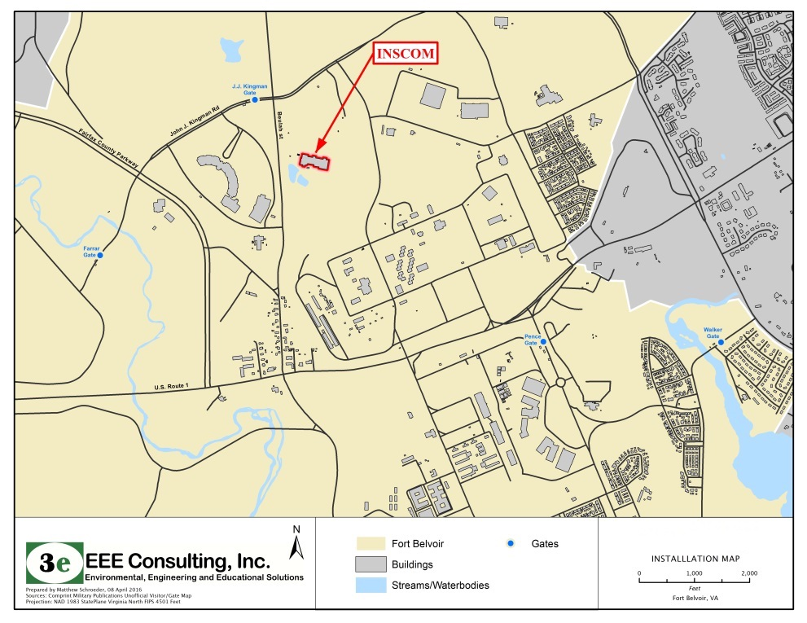
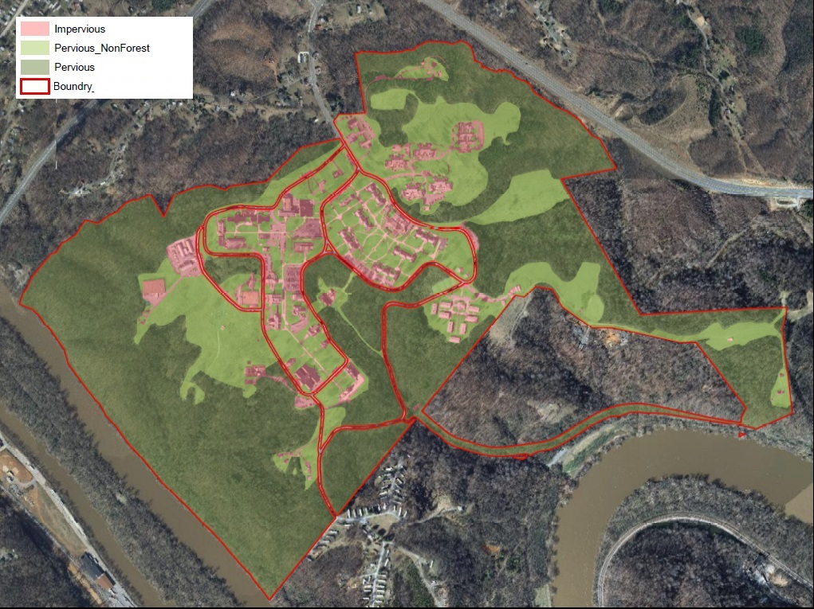
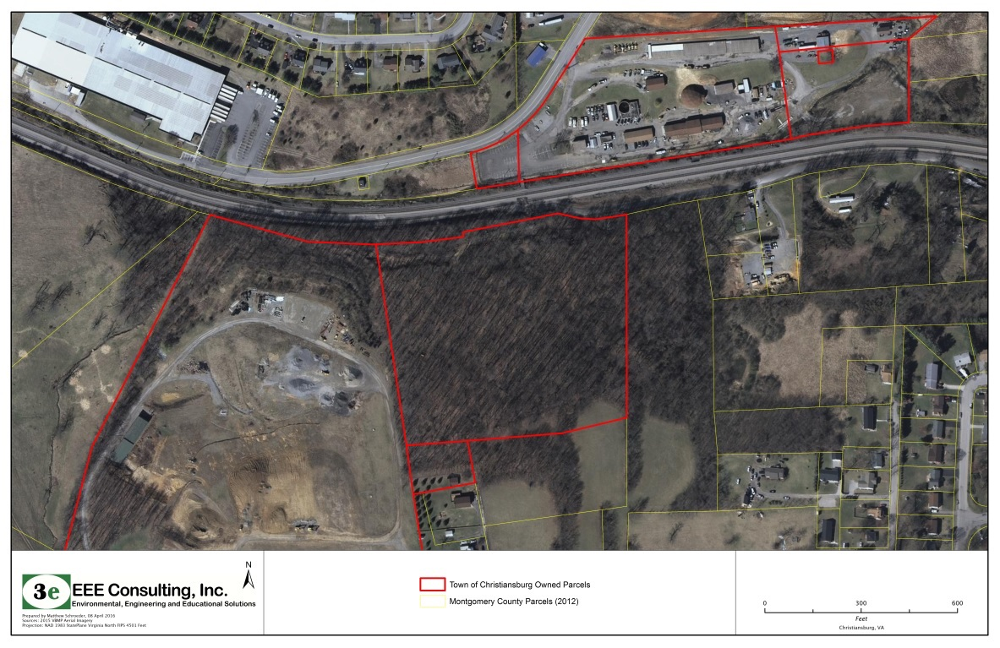
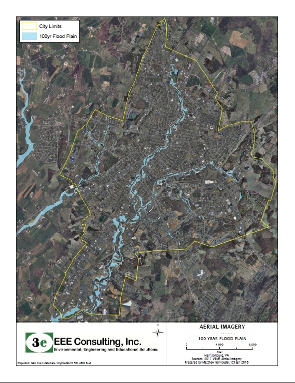
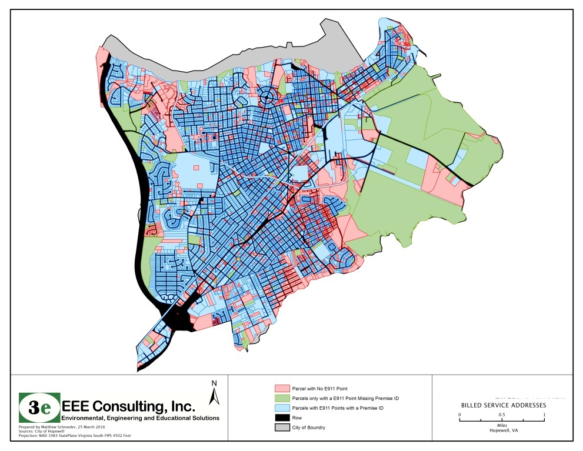
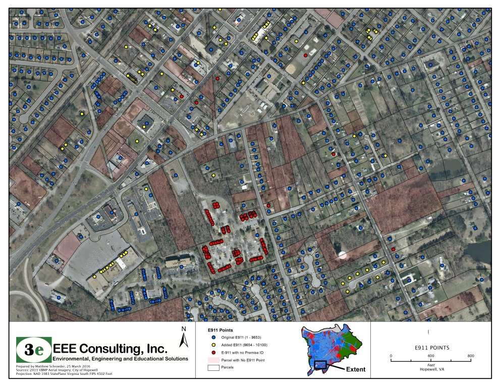
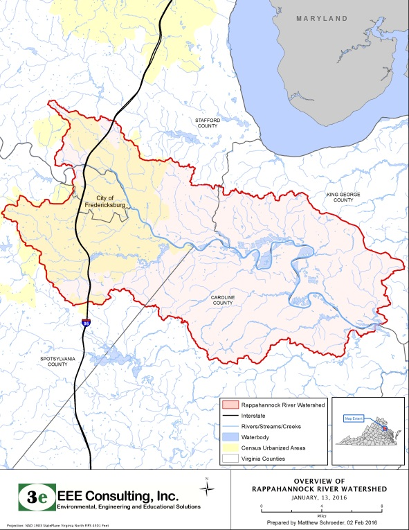
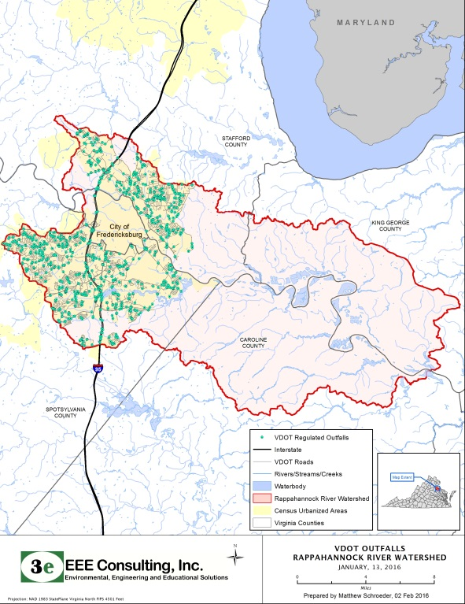
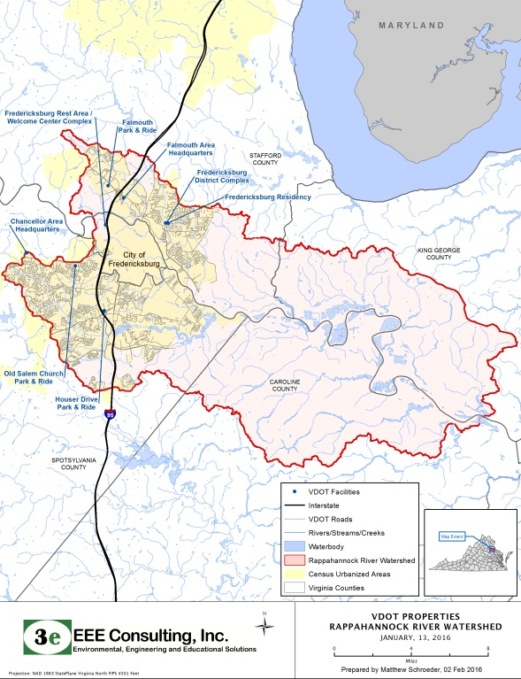
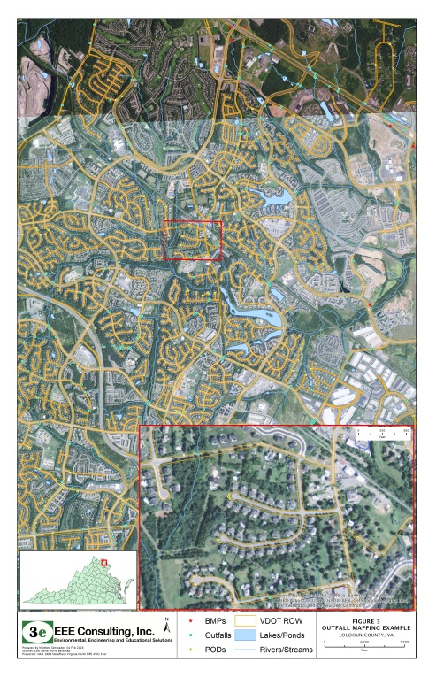

GIS Analyst | EEE Consulting | Richmond, VA | Nov 2015 – Apr 2016
EEE Consulting, Inc. (3e) is a Virginia small business that provides environmental and engineering services. They focus on “all things environmental,” including Stormwater, Brownfields, Assessment and Remediation, Asbestos, Lead, Wetland Delineation, Permitting, Mitigation Design, Stream Restoration, Threatened and Endangered Species consultation, NEPA Environmental Assessment, Hazardous Waste Management, RCRA, CERCLA, TSCA and beyond. They're biggest focus is on linear infrastructure projects including transportation.
Job Duties & Accomplishments:
- Supported environmental projects by conducting GIS analysis, and map production
- Collected data using ArcGIS Online and handheld GPS collection platforms
- In charge of data creation, editing, quality assurance, and metadata collection
- Maintained company resources including databases, software, and hardware (GPS)
- Researched state, county, and city GIS datasets and supporting documents
- Edited and merged GIS datasets from various counties, cities, and rural localities
- Analyzed datasets to include road centerlines, NHD flowlines, NWI wetlands,
local hydrography, parcels, public lands, and national land cover datasets - Utilized ESRI products, handheld GPS devices, and Google earth imagery
- Conducted field research using handheld data collection platforms
- Prepared, coordinated, and consolidated documents, reports, and briefings
Mapping Examples:
Facility Basemap
Landcover Analysis


Parcel Data Mapping
Flood Mapping


Address and Parcal Mapping


Watershed Mapping for Roadways


Watershed Mapping for Roadways
Finding Road Areas based on Parcel Data

